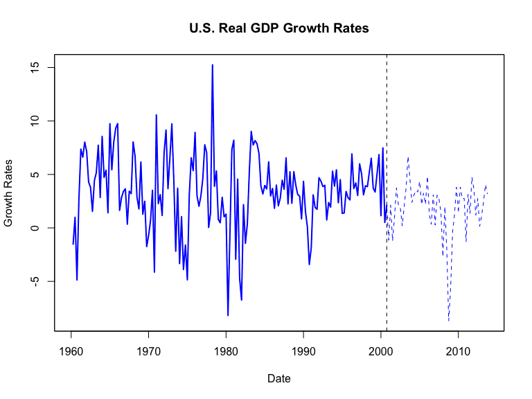
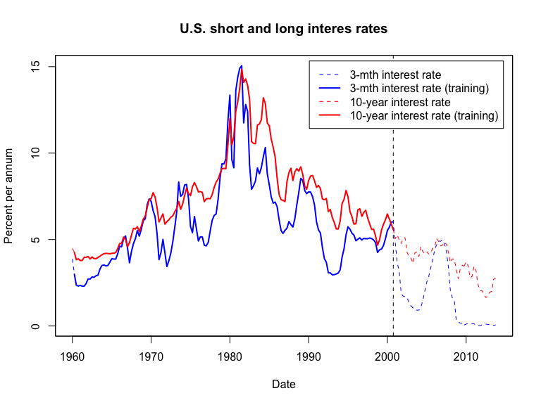
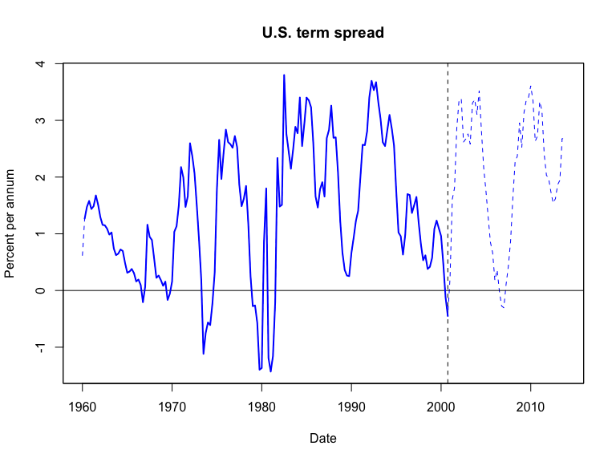
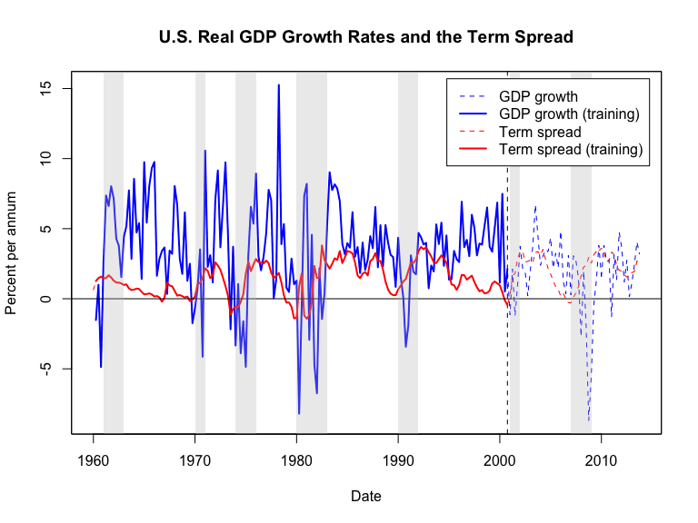
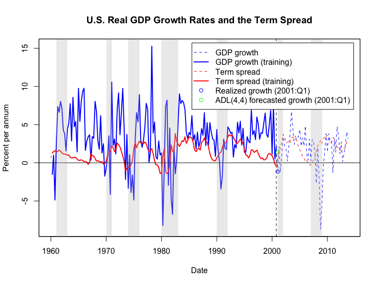
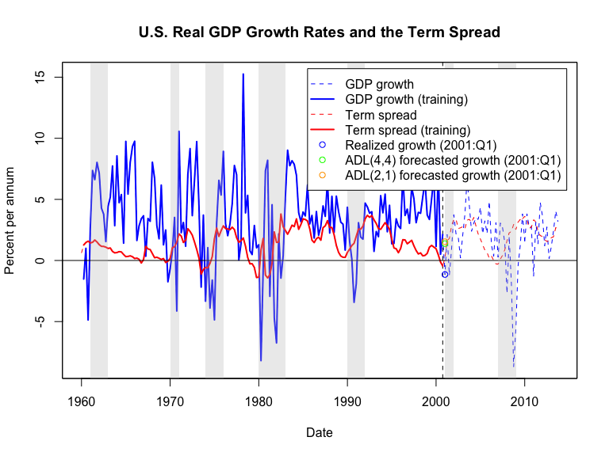

Based on Stock and Watson, ch. 15
Autoregressive forecasts of \(Y\) use the immediate past values of \(Y\) itself; often, economic theory suggests another variable \(X\) may help forecast \(Y\) as well.
Autoregressive Distributed Lag models adds additional predictors to the forecasting model
Autoregressive due to lags of dependent variable
Also includes a lag distribution of additional predictor \(X\)
Consider two time series \(Y_t\) and \(X_t\), and consider:
\[\begin{multline*} Y_t = \beta_0 + \beta_1 Y_{t-1} + \beta_2 Y_{t-2} + \ldots + \beta_p Y_{t-p} \\ + \delta_1 X_{t-1} + \delta_2 X_{t-2} + \ldots + \delta_q X_{t-q} + u_t, \end{multline*}\]
where \(\beta_0,\beta_1, \ldots, \beta_p,\delta_1,\delta_2,\ldots,\delta_q\) are coefficients, and \(u_t\) is the error term with the property:
\[E(u_t|Y_{t-1},Y_{t-2},\ldots,X_{t-1},X_{t-2},\ldots) = 0\]
This model is an \(ADL(p,q)\)-model
The \(ADL(p,q)\)-model is a multiple regression model; estimation discussed in pre-recorded video
# load US macroeconomic data
usmac_qt <- read_xlsx("us_macro_quarterly.xlsx", sheet = 1, col_types = c("text", rep("numeric", 9)))## New names:
## * `` -> ...1# Fix format of date
usmac_qt$...1 <- as.yearqtr(usmac_qt$...1, format = "%Y:0%q")
# Relabel column names in dataframe
colnames(usmac_qt) <- c("Date", "GDPC96", "JAPAN_IP", "PCECTPI",
"GS10", "GS1", "TB3MS", "UNRATE", "EXUSUK", "CPIAUCSL")
# GDP series as xts object
GDP <- xts(usmac_qt$GDPC96, usmac_qt$Date)["1960::2013"]
# GDP growth series as xts object
GDPGrowth <- xts(400 * log(GDP/lag(GDP)))
ishort <- xts(usmac_qt$TB3MS, usmac_qt$Date)["1960::2013"]
ilong <- xts(usmac_qt$GS10, usmac_qt$Date)["1960::2013"]
term.spread <- ilong - ishort
# Training data
GDPGrowth.train <- na.omit(GDPGrowth["1960::2000"])
ishort.train <- na.omit(ishort["1960-04/2000-12"])
ilong.train <- na.omit(ilong["1960-04::2000-12"])
term.spread.train <- na.omit(term.spread["1960-04::2000-12"])



Consider the following \(ADL(4,4)\)-model for US GPD growth:
\[\begin{multline*} GDPGR_t = \beta_0 + \textstyle \sum_{j=1}^4 \beta_j GDPGR_{t-j} \\ + \textstyle \sum_{k=1}^4 \delta_j TSPR_{t-k} + u_t \end{multline*}\]
Estimate using \((GDPGR_t,TSPR_t; t = 1,2,\ldots,T)\), make a 1-step ahead forecast:
\[\begin{multline*} \widehat{GDPGR}_{T+1|T} = \hat{\beta}_0 + \textstyle \sum_{j=0}^3 \hat{\beta}_j GDPGR_{T-j} \\ + \textstyle \sum_{k=0}^3 \hat{\delta}_j TSPR_{T-k} \end{multline*}\]
library(dynlm) # Load dynlm to estimate higher-order autoregressions
ADL44.dynlm <- dynlm(ts(GDPGrowth.train) ~ L(ts(GDPGrowth.train)) + L(ts(GDPGrowth.train), 2) +
L(ts(GDPGrowth.train), 3) + L(ts(GDPGrowth.train), 4) +
L(ts(term.spread.train)) + L(ts(term.spread.train), 2) +
L(ts(term.spread.train), 3) + L(ts(term.spread.train), 4)) ## Parameter | Coefficient | SE | 95% CI | Statistic | df | p
## ------------------------------------------------------------------------------------------
## (Intercept) | 1.32 | 0.61 | [ 0.11, 2.53] | 2.16 | 150 | 0.033
## L(ts(GDPGrowth.train)) | 0.20 | 0.09 | [ 0.03, 0.37] | 2.35 | 150 | 0.020
## L(ts(GDPGrowth.train), 2) | 0.13 | 0.10 | [-0.07, 0.32] | 1.30 | 150 | 0.195
## L(ts(GDPGrowth.train), 3) | -0.04 | 0.07 | [-0.18, 0.11] | -0.49 | 150 | 0.628
## L(ts(GDPGrowth.train), 4) | 0.05 | 0.09 | [-0.13, 0.23] | 0.56 | 150 | 0.573
## L(ts(term.spread.train)) | -0.27 | 0.51 | [-1.27, 0.74] | -0.52 | 150 | 0.604
## L(ts(term.spread.train), 2) | 1.68 | 0.65 | [ 0.39, 2.97] | 2.57 | 150 | 0.011
## L(ts(term.spread.train), 3) | -1.03 | 0.76 | [-2.53, 0.47] | -1.36 | 150 | 0.177
## L(ts(term.spread.train), 4) | 0.35 | 0.54 | [-0.72, 1.42] | 0.65 | 150 | 0.515# Produce one-step ahead forecast of GDP growth for 2003:Q1
T <-length(GDPGrowth.train) # Length of observed series
fcast.ADL44 <- ADL44.dynlm$coefficients %*% c(1, GDPGrowth.train[T], GDPGrowth.train[(T-1)], GDPGrowth.train[(T-2)], GDPGrowth.train[(T-3)],
term.spread.train[T], term.spread.train[(T-1)], term.spread.train[(T-2)], term.spread.train[(T-3)])
fcast.ADL44 # Print to console## [,1]
## [1,] 1.378923# Forecast error
fcast.ADL44.error <- as.numeric(GDPGrowth["2003"][1]) - fcast.ADL44
fcast.ADL44.error # Print to console## [,1]
## [1,] 0.6425715
Consider the following \(ADL(2,1)\)-model for US GPD growth:
\[\begin{multline*} GDPGR_t = \beta_0 + \textstyle \sum_{j=1}^2 \beta_j GDPGR_{t-j} \\ + \delta_1 TSPR_{t-1} + u_t \end{multline*}\]
Estimate using \((GDPGR_t,TSPR_t; t = 1,2,\ldots,T)\), make a 1-step ahead forecast:
\[\begin{multline*} \widehat{GDPGR}_{T+1|T} = \hat{\beta}_0 + \textstyle \sum_{j=0}^1 \hat{\beta}_j GDPGR_{T-j} \\ + \hat{\delta}_1 TSPR_{T} \end{multline*}\]
ADL21.dynlm <- dynlm(ts(GDPGrowth.train) ~ L(ts(GDPGrowth.train)) + L(ts(GDPGrowth.train), 2) + L(ts(term.spread.train)))
parameters(ADL21.dynlm, robust = TRUE, vcov_type = "HC1")## Parameter | Coefficient | SE | 95% CI | Statistic | df | p
## ----------------------------------------------------------------------------------------
## (Intercept) | 1.29 | 0.58 | [ 0.14, 2.45] | 2.21 | 157 | 0.028
## L(ts(GDPGrowth.train)) | 0.21 | 0.09 | [ 0.04, 0.39] | 2.43 | 157 | 0.016
## L(ts(GDPGrowth.train), 2) | 0.16 | 0.09 | [-0.02, 0.34] | 1.79 | 157 | 0.076
## L(ts(term.spread.train)) | 0.66 | 0.24 | [ 0.19, 1.13] | 2.76 | 157 | 0.006# Produce one-step ahead forecast of GDP growth for 2003:Q1
fcast.ADL21 <- ADL21.dynlm$coefficients %*% c(1, GDPGrowth.train[T], GDPGrowth.train[(T-1)], term.spread.train[T])
fcast.ADL21 # Print to console## [,1]
## [1,] 1.533642# Forecast error
fcast.ADL21.error <- as.numeric(GDPGrowth["2003"][1]) - fcast.ADL21
fcast.ADL21.error # Print to console## [,1]
## [1,] 0.4878531
\(ADL\)-models forecast \(Y\) using the immediate past values of \(Y\) itself as well as past values of other predictors.
Univariate autoregression (\(AR\)-models) are special cases of the \(ADL\)-models.
ADL-models can be estimated by OLS (see pre-recorded video for assumptions required for consistent estimation)
We can estimate \(ADL\)-models in R and use them for forecasting